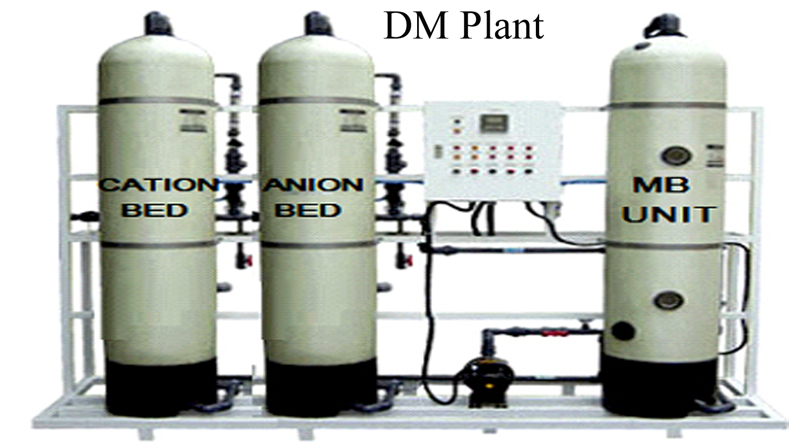

De-mineralising plants are designed to remove minerals from water to provide pure and high-quality water. Our systems are available in both manual and automatic versions, ensuring flexibility and efficiency in water treatment processes.
Overview
De-mineralising plants are essential for removing dissolved minerals from water, ensuring high-quality purified water. These systems use ion exchange resins or reverse osmosis to remove harmful minerals like calcium, magnesium, and other dissolved solids. Available in manual and automatic models, they offer flexibility in operation while meeting various industrial, commercial, and residential water treatment needs.
Features
- Efficient Mineral Removal: Removes harmful minerals to provide pure water.
- Manual & Automatic Options: Available in both manual and automatic models to suit different needs.
- Compact Design: Space-saving design, ideal for various installation environments.
- Easy Maintenance: Low maintenance requirements with easy access to replaceable parts.
- High Performance: High-quality ion exchange resins or reverse osmosis membranes for effective de-mineralisation.
- Cost-Effective: Affordable solutions for both small and large-scale operations.
Process
The process of de-mineralisation involves the following steps:
- Pre-Treatment: Water passes through pre-filters to remove suspended solids and impurities.
- Ion Exchange / Reverse Osmosis: In manual systems, ion-exchange resins remove mineral ions. In automatic systems, reverse osmosis or ion exchange removes minerals and dissolved solids.
- Post-Treatment: Polishing filters are used to improve the water's taste, clarity, and final quality.
- Storage: De-mineralised water is stored for immediate use or distribution.

Applications
- Industrial: Used in various industries like power plants, pharmaceuticals, and manufacturing.
- Commercial: Ideal for restaurants, hotels, and hospitals where pure water is essential.
- Laboratories: Provides pure, de-mineralised water for experiments and tests.
- Residential: Can be used in homes for producing high-quality drinking water.
- Water Treatment Plants: Essential for purifying large volumes of water for various uses.